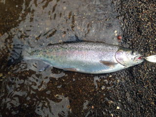

|
|
| ２０１４年４月２６日 下がりアメマス４０センチ （CHR TNTK） |
２０１４年４月２６日 下がりアメマス４２センチ （CHR TNTK） |
| ２０１４年５月１日 アメマス３１センチ その他アメマスや山女多数。 （WTNBT一本目橋の下） |
２０１４年５月１日 ニジマス２４センチ （SHOR_DMの上の川の更に上） |
| ２０１４年５月１日 ニジマス３０センチ （SHOR_DMの上の川の更に上） |
２０１４年５月１７日 ニジマス３２センチ この日はニジマス３０本以上。 （SHOR_DM２本目橋の車止） |
| ２０１４年５月１７日 ニジマス３０センチ この日はニジマス３０本以上。 （SHOR_DM２本目橋の車止） |
２０１４年５月１７日 ニジマス２８センチ この日はニジマス３０本以上。 （SHOR_DM２本目橋の車止） |
 |
|
| ２０１４年５月１７日 ニジマス３０センチ この日はニジマス３０本以上。 （SHOR_DM２本目橋の車止） |
２０１４年５月１７日 ニジマス４９センチ(1) この日はニジマス３０本以上。 （SHOR_DM２本目橋の車止） |
| ２０１４年５月１７日 ニジマス４９センチ(2) この日はニジマス３０本以上。 （SHOR_DM２本目橋の車止） |
２０１４年５月１７日 ニジマス４９センチ(3) この日はニジマス３０本以上。 （SHOR_DM２本目橋の車止） |
 |
|
| ２０１４年５月１８日アメマス４８センチ。３時半、ミノー早引き。 （KSRKO OSTB川） |
２０１４年５月１８日アメマス５０センチ。６時頃、ミノー早引き。 （KSRKO IKNYU） |
| ２０１４年５月２４日 ニジマス２５センチ。 この日はニジマス１０本程。 （SHOR_DM２本目橋の車止） |
２０１４年５月２４日アメマス５２センチ(1)。５時頃、ルアーマン黒銀。 （KSRKO TUBETUKITA） |
| ２０１４年５月２５日アメマス５２センチ(2)。５時頃、ルアーマン黒銀。 （KSRKO TUBETUKITA） |
２０１４年５月２５日 ニジマス２０センチ前半。 この日はニジマス２０本以上。 （SHOR_DM２本目橋の車止） |
| ２０１４年５月２５日 ニジマス２７センチ。 この日はニジマス２０本以上。 （SHOR_DM２本目橋の車止） |
２０１４年５月２５日 ニジマス２７センチ。 この日はニジマス２０本以上。 （SHOR_DM２本目橋の車止） |
| ２０１４年５月３０日 アメマス２０～２８センチ２０本以上。 （ONBT JR下） |
２０１４年６月１日 ニジマス３１センチ。 暖かい日。あまり釣れない。 （SHOR_DM２本目橋の車止） |
| ２０１４年６月７日 ニジマス２３センチ （SRB） |
２０１４年６月７日 ヤマメ２２センチ （SRB） |
|  | |
| ２０１４年６月２３日 ニジマス２９センチ （AKN） |
２０１４年６月２３日 ニジマス２５センチ （AKN） |
| ２０１４年６月２３日 ニジマス２４センチ （AKN） |
２０１４年６月２３日 ヤマメ２４センチ （AKN） |
| ２０１４年６月２８日 アメマス４６センチ サクラはいなかった。 （SIBT） |
２０１４年６月２９日 ウグイ４４センチ （AKN） |
| ２０１４年７月３日 ニジマス２７センチ （SHOR赤橋上深み） |
２０１３年７月５日 ニジマス５２センチ （AKN PRK） |
| ２０１３年７月５日 ニジマス４４センチ （AKN PRK） |
２０１４年７月６日 ニジマス３４センチ。 （SHOR_DM２本目橋の車止） |
| ２０１４年７月６日 ニジマス３４センチ。ワーム使用。 （SHOR_DM２本目橋の車止 白樺） |
２０１４年７月１９日 イトウ８０センチ掛かるが、上げれず。 （STR） |
| ２０１４年８月１６日 ニジマス３３センチ(1)。 この日は２時間で３０本。 (KKC 砂利上の更に上を左に曲がり、１本目の橋下) |
２０１４年８月１６日 ニジマス３３センチ(2)。 この日は２時間で３０本。 (KKC 砂利上の更に上を左に曲がり、１本目の橋下) |
| ２０１４年８月１６日 ニジマス２４センチ。 この日は２時間で３０本。 (KKC 砂利上の更に上を左に曲がり、１本目の橋下) |
２０１４年８月１７日 ニジマスとイワナ２時間で２０本。 |